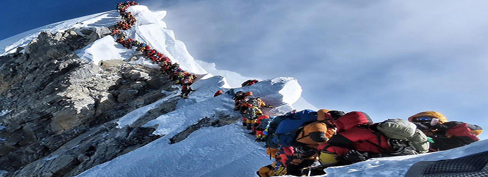

SOLUKHUMBU
Solukhumbu District is one of the seventy-five districts of Nepal and as the name suggests, it consists of the subregions Solu and Khumbu. The district, with Salleri as its district headquarters, has a population (2001) of 107,686. Mount Everest is located in the northern part of this district, within Sagarmatha National Park. Indigenous ethnic Rai and hill Caste Chhetri are the main groups living in the mid-hills, while Sherpas occupy high mountains. As with most parts of Nepal, there are no roads or railroad tracks leading into or out of Solukumbu, with access being limited to air transportation to the villages of Lukla and Phaplu. Once inside the District, travel is by foot. Distances are measured by how many days it takes to walk over well defined and maintained trails. The topography is one of verdant hills, deep gorges, rushing rivers and the breathtaking scenery of the Himalayan Mountains. People make their livings through subsistence farming, augmented by tourism created by trekking. Despite the abject poverty, visitors are greeted with radiant smiles, genuine warmth and a generous welcome. A more hospitable people is difficult to imagine. Within the District, Taksindu is a ‘village development committee’, similar to a county within a state, and Taksindu is also the name of a village within that VDC, along with numerous other villages, including Nunthala and Chhulemu. The Taksindu VDC has ten separate schools located throughout, with nine being elementary and sub-secondary; and one located in Nunthala being the major secondary school.